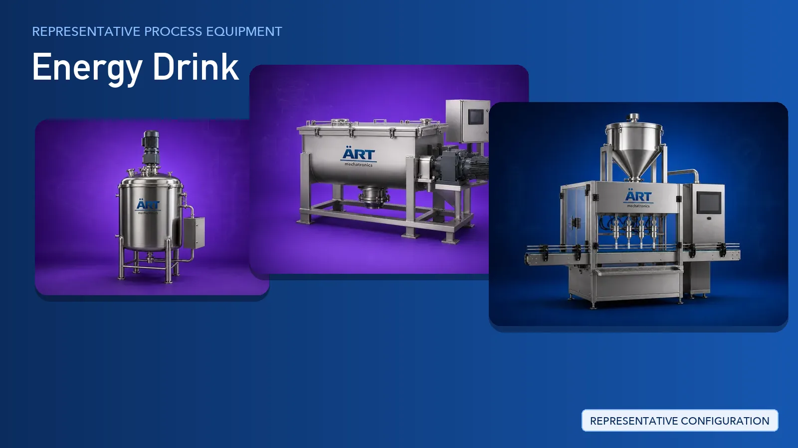

Energy Drink Plant & Machinery Solutions (Ready-to-Drink & Powder Premix Lines)
Energy drinks are produced as ready-to-drink liquids filled into cans, bottles and pouches, and as powder premixes packed into sachets and sticks.

About Energy Drink processing
ART Mechatronics provides complete turnkey solutions for energy drink production, covering premix powder intake and sifting, weighing and dosing, dry blending, liquid mixing and holding tanks, homogenising, thermal treatment, filling and sealing, and secondary packaging. Our solutions are designed for hygienic operation, repeatable batch consistency and controlled dust extraction at every powder handling point.
Complete Energy Drink Process Flow
Sugar, vitamins, amino acids, acidulants and other dry ingredients are tipped, sifted and conveyed under dust-controlled conditions.
Removes lumps and foreign particles before blending.
Each ingredient is weighed to recipe and dry blended into a uniform premix.
Ensures:
- Accurate recipe dosing
- Uniform distribution of minor ingredients
- Batch-to-batch repeatability
Premix is dissolved in treated water to prepare the finished beverage batch.
Ensures complete dissolving and a clear, stable batch.
Flavours, colours and functional ingredients are blended in and the batch is homogenised before filling.
Ensures a uniform, stable finished product.
The batch is heat treated where the recipe requires it and then cooled to filling temperature.
Supports product safety and shelf stability.
Cans, bottles, sachets and sticks are filled, sealed and coded on the packing line.
Carbonation and product-specific filling units are integrated with the line as per project scope.
Filled packs are inspected, labelled, collated into cartons and palletised for dispatch.
Suitable for retail multipacks and bulk distribution.
Dust control and utility systems supplied alongside the line:
- Dust Collector Machine and Cartridge Dust Collector Machine at tipping and blending points
- Centralised Dust Collection System for the whole powder handling area
- Air Handling Unit and Dehumidifier for clean, dry blending rooms
- Steam Generator, Boiler, Chiller and Cooling Tower as plant utilities
Machinery Required for Energy Drink Plant
Turnkey Energy Drink Plant Solutions
ART Mechatronics offers complete turnkey solutions for energy drink plants, including:
- Process design & plant layout
- Premix powder handling and sifting systems
- Weighing, dosing and dry blending systems
- Liquid mixing, holding and homogenising systems
- Thermal treatment and cooling systems
- Automation & control panels
- Filling and packaging line integration
- Dust collection and air pollution control
- Installation & commissioning
- After-sales support
We customize solutions based on:
- Product form (ready-to-drink liquid or powder premix)
- Production capacity
- Pack format (can, bottle, pouch, sachet, stick)
- Automation level
Why Choose ART Mechatronics
- Experience across both powder blending and liquid processing systems
- Accurate weighing and dosing for minor and active ingredients
- Hygienic food-grade tank, mixer and contact-part design
- Dust-controlled powder handling from tipping to blending
- Automated control with recipe management
- Complete filling, inspection and packaging line integration
- Global export capability
Machinery in a Energy Drink plant
Where it's used
Get pricing & specs for the Energy Drink plant
Share the product, target capacity, current process and plant location. These details help our engineers discuss the right machine or line configuration.
One partner, from design to start-up
ART Mechatronics designs, manufactures, installs and commissions your Energy Drink plant solution with regional presence in India, UAE and Thailand.